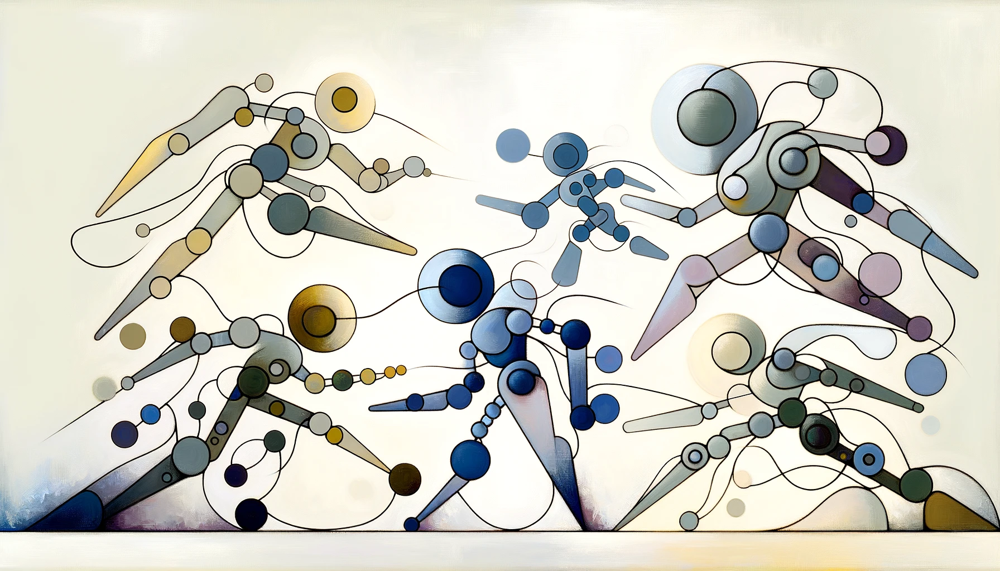
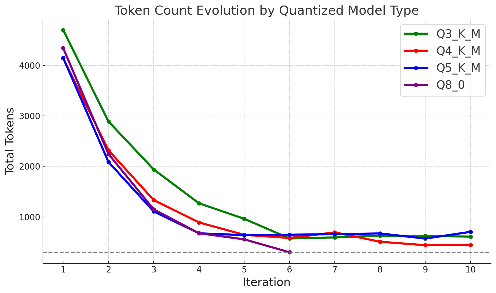
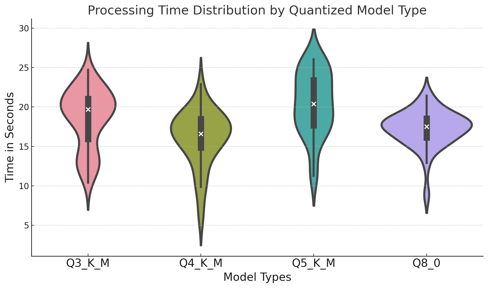

EVALUATOR_PROMPT = """
As a distinguished IT professor specializing in large language models and artificial intelligence, you have been approached by the Nobel Prize Association. They seek your expertise in evaluating four short summaries of a seminal AI paper. The author of the best summary will be awarded the Nobel Prize of the year. Recognizing the significance of this task, you approach it with utmost seriousness.
Below are the four summaries submitted by the candidates, identified as "candidates-Q". The Nobel Prize Association has requested these summaries to be concise and informative, of 300 words or less.
Q3_K_M
{Q3_K_M}
Q4_K_M
{Q4_K_M}
Q5_K_M
{Q5_K_M}
K8_0
{K8_0}
Your assessment should focus on the following criteria:
0) Main Message: What is the core message of the review? What are its most interesting and practical aspects?
1) Conciseness: Did the author adhere to the 300 word limit, providing a succinct yet informative review?
2) Readability, Flow, and Prosaic Performance: How well-written is the review? Is it consistent and clear? Does it offer deep analysis, or is it superficial?
3) Insights and Novelty: Does the review offer insightful, unexpected, or otherwise interesting findings? Does it provide precise metrics and figures to support its claims? Is it worth reading for an AI professional, or merely repetitive?
4) Overall Integrity: How commendable is the summary? Does it merit a Nobel Prize?
Please evaluate each summary in detail and then score each attribute on a scale of 1 to 5. The overall integrity will determine the final winner. Present your results in a numerical table. Compare and contrast to reach the best conclusion, and deliberate as needed. Review your decisions thoroughly before making a final commitment."""A while back I wrote a self-note / quick guide on how to interpret the different quantization model codes, what they mean and how they affect performance, which I found useful as a general starting guide.
On this continued note I look at the same question but now specifically focused on how quantization affects performance of small 7B models, particularly OpenPipe/mistral-ft-optimized-1218 or Weyaxi/Seraph-7B on summarization tasks.

The Battle of the Quantized Models, 1927
Quantized Models & Summarization Task
For this study we will compare the performance of the following quantized model variants: Q3_K_M, Q4_K_M, Q5_K_M and K8_0. All of them are available for download on HuggingFace, made available by TheBloke.
The task at hand will be the same as on the last blog post, which is recursive summarization by parts (i.e.: iteratively summarizing a long document into a small set of notes; see the blog post for more details or this script for the related code). I think this task is ideal for our purpose as the iterative nature of the process means that errors accumulate and amplify up to the final summary, making it easier to spot differences in performance.
We will run the different model versions locally using LM Studio and evaluate them across three different axes: - Memory Usage. How much memory does the model use during inference? This is the first metric where we expect to see a difference, as quantization is meant to reduce memory usage. - Inference Time. How long does it take for the model to generate a summary? On the recursive summarization by parts framework we actually produce many mini-summaries, so we will look at the distribution of their creation runtime. - Summary Quality. How good are the summaries, and how well do they adhere to the guidelines? GPT-4 will be our judge here, allowing us to expedite the process and remove any human bias.
Today’s Reading: Deja Vu - Contextual Sparsity for Efficient LLMs at Inference Time
The document we will summarize is the Deja Vu LLM arxiv paper, which is a good choice as it is fairly technical but overall still digestible enough for the layman reader. For reference, here is a summary that the GPT maestro produced; we can use it as a benchmark for our own results:
In their paper “Deja Vu: Contextual Sparsity for Efficient LLMs at Inference Time,” the authors present a new method called “contextual sparsity” to improve the efficiency of Large Language Models (LLMs) during inference without compromising performance. Contextual sparsity identifies specific sets of attention heads and MLP parameters that produce similar outputs to dense models for certain inputs, accelerating LLM inference without affecting model quality. The authors introduce DEJAVU, a system that predicts contextual sparsity on the fly for each layer, reducing OPT-175B’s inference latency by over 2x compared to existing methods. This approach has practical applications in reducing the computational cost of inference for large-scale LLMs, potentially enabling real-time inference on mobile devices or edge computing. DEJAVU uses contextual sparsity to improve LLM efficiency without sacrificing quality, reducing inference time by 4.5x compared to baseline models. The findings demonstrate that contextual sparsity can be applied to any pre-trained LLM without retraining and is compatible with various model architectures, offering significant efficiency gains without sacrificing accuracy.
Results
Below are the final summaries produced by each quantized model, where we have requested a summary length of approximately 300 tokens.
<div class="select is-fullwidth">
<select id="model_select" name="model_select" class="custom-select">
<option value="Q3_K_M">Q3_K_M</option>
<option value="Q4_K_M">Q4_K_M</option>
<option value="Q5_K_M">Q5_K_M</option>
<option value="K8_0">K8_0</option>
</select>
</div><textarea id="summary_text" name="summary_text" class="custom-textarea"></textarea>The first thing we notice is that not all models are able to produce a summary of the requested length, and only the Q8_0 version is able to reach the desired ≤300 token mark. At some point, the other variants are unable to continue the summarization process, and from that iteration onwards they simply copy the text. We can see this behavior on the following token count plot:

We also note that the Q8_0 model also converges the fastest to the desired token length, while the more quantized variants seem to summarize the information at a slower rate.
Memory Usage and Runtime Speed
Before we continue looking at the summary quality, let’s first look at the memory usage and runtime speed. The following table provides a summary view:
| Model | Memory Usage (GB) | Total Runtime (s) |
|---|---|---|
| Q3_K_M | 8.74 | 891 |
| Q4_K_M | 9.54 | 675 |
| Q5_K_M | 10.30 | 859 |
| K8_0 | 12.80 | 564 |
For memory usage, we observe the expected behavior: total RAM utilized increases linearly with the number of bits used for quantization. K8_0 uses almost 50% more memory than Q3_K_M, which is significant, but in absolute terms still a manageable amount for my M1 Mac (with 32GB of RAM).
Interestingly, from a runtime perspective, the K0_8 model is the fastest to complete, but only because it converged to its final summary at a faster pace. In terms of per chunk runtime, we don’t see clear differences, as indicated on the following graph:

Performing a statistical tests over these distributions reveals that they do indeed have different means, although I believe this is driven more by the token count differences than by the quantization itself. The hypothesis makes sense considering there is no clear ordering or monotonicity in the results.
Quality of Summaries
Finally we complete the assessment of the different models’ summary quality. To do so, we will pass the four of them to GPT-4 leveraging the following prompt:
The results are presented below, where we observe K8_0 dominating by excelling in conciseness and readability:
| Model Version | Conciseness | Readability and Prosaic | Insights and Novelty | Overall Integrity |
|---|---|---|---|---|
| Q3_K_M | 2 | 4 | 3 | 3 |
| Q4_K_M | 5 | 5 | 3 | 4 |
| Q5_K_M | 2 | 4 | 4 | 3 |
| K8_0 | 5 | 5 | 4 | 5 |
Conclusions
It seems there are not too many advantages of applying quantization to small models unless one is memory constrained. There seems to be a noticeable performance hit for the more heavily quantized models, and runtime might also degrade considering the model becomes less steerable and might not adhere to the user guidelines, including conciseness and token length. The technique seems better reserved for larger models, where the memory savings are more significant and the performance hit is likely less noticeable.